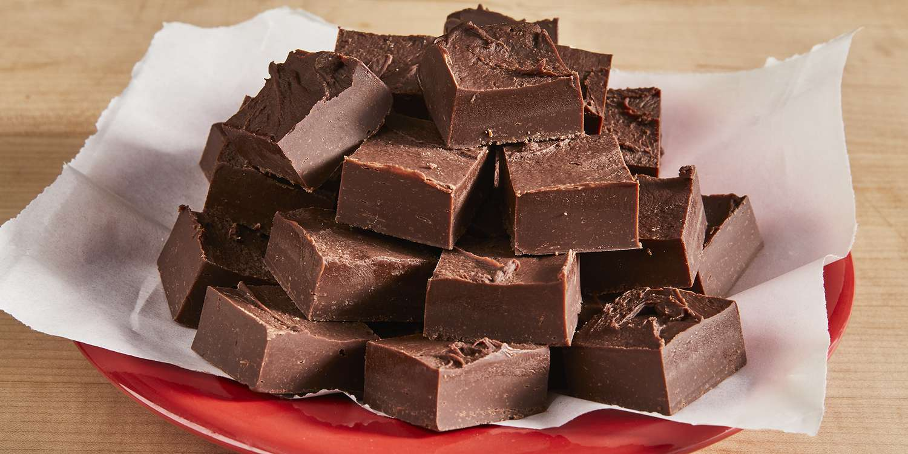

Ingredients:
- 12 oz pkg white morsels white chocolate chips
- 1 can eagle brand sweetened condensed milk
- 3/4 cup peanut butter
Instructions:
- Line a 8x8 pan with parchment paper and spray with cooking spray
- Pour all the milk and white morsels and peanut butter into a microwavable safe bowl and nuke for 1 minute
- Stir the mixture and return it to the microwave and heat for another minute
- Remove from microwave and pour into prepared pan
- Put the pan in the refrigerator so the fudge will set quickly
- Cut into squares
